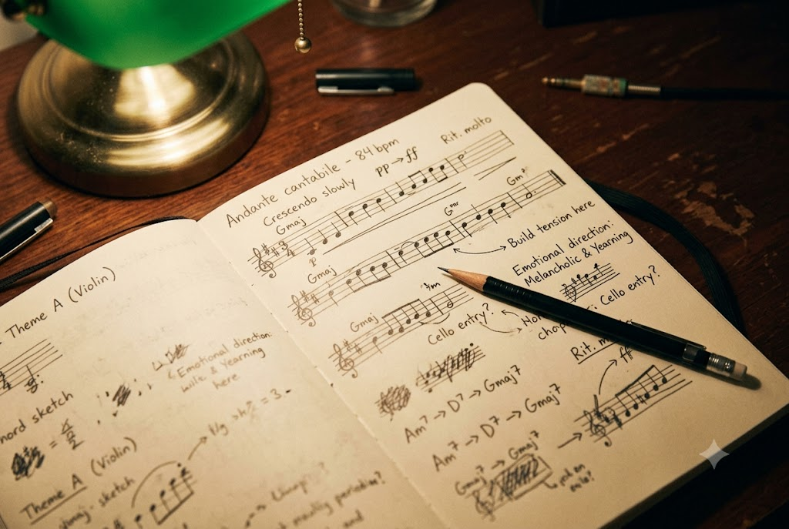
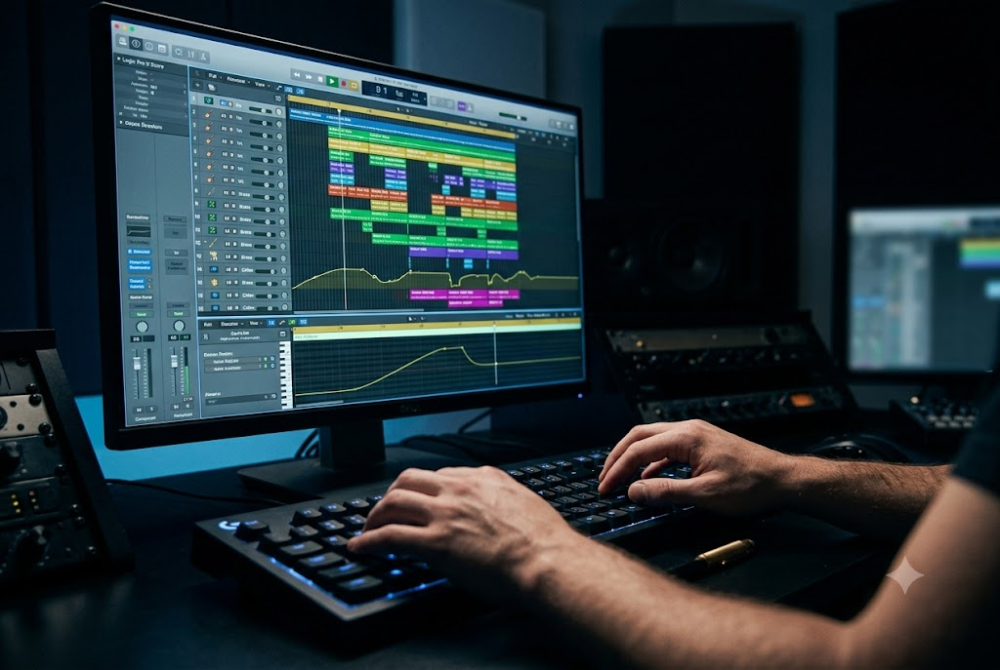
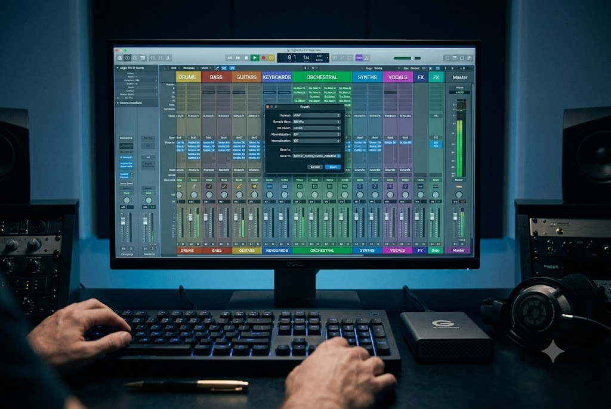
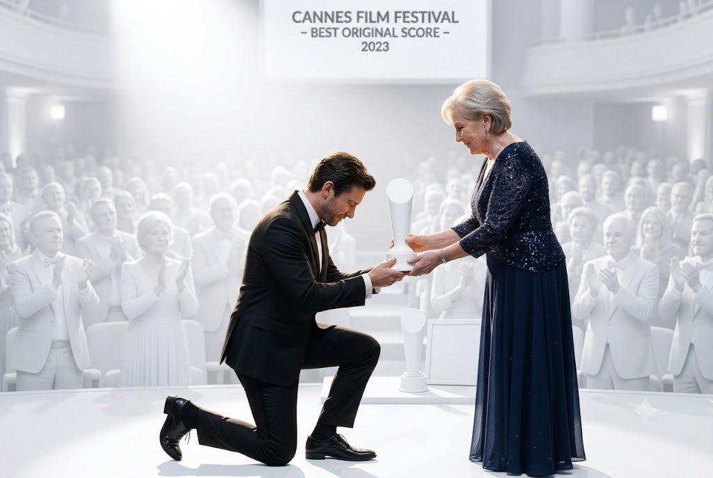
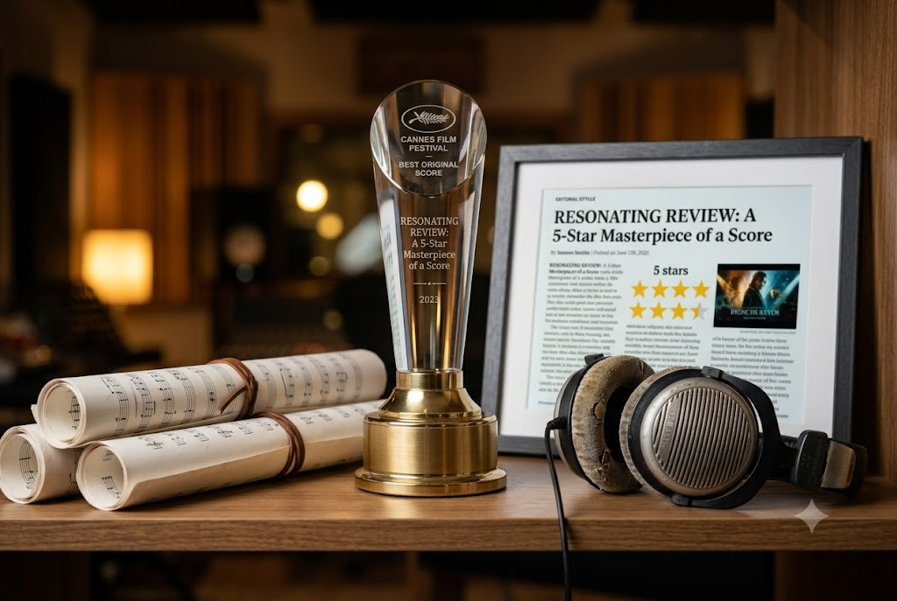

I write music
for silence
and everything after
Orchestral, electronic, hybrid — composed for the moments that need more than words.
The reel speaks for itself
Six minutes. Four genres. Every frame of this reel represents a real project, a real director, and a real emotional problem I was hired to solve with music.
Browse All Compositions
From brief to final mix
Every score follows the same three-stage process — built around clarity, collaboration, and zero surprises at delivery.

The Brief
We start with a conversation — not a form. I want to understand what you need audiences to feel, not just what genre you're working in. Notes, references, and instincts all welcome.

The Composition
I work in focused bursts, sharing sketch demos early so you're never waiting long to hear a direction. Two rounds of revision are included — most projects need one.

The Delivery
Stems, full mixes, M&E tracks, and Wwise-ready files — all metadata tagged, organized, and delivered ahead of schedule. No chasing, no ambiguity.
The instruments, digital and acoustic
I work in the space between the orchestra and the synthesizer. Here's what's in the room.
Marcus delivered a score that made our producers cry in the first playback. That doesn't happen. He has a gift for emotional truth that is rare and irreplaceable.

Work that has been noticed
A selection of awards, nominations, and press coverage from the past four years.


-
Best Sound — Edinburgh Documentary Film Festival 2022The Weight of Stars
-
Outstanding Score — London Indie Film Awards 2023Quiet Meridian
-
Nominated — BAFTA Games Music 2024Echoes of Veil
-
"A composer to watch" — Film Music Weekly 2024Press Feature
-
Finalist — Sundance Composer Fellowship 2023Open Category
Ready to score something extraordinary?
Limited availability. Let's make sure your project is the right fit before we dive in.